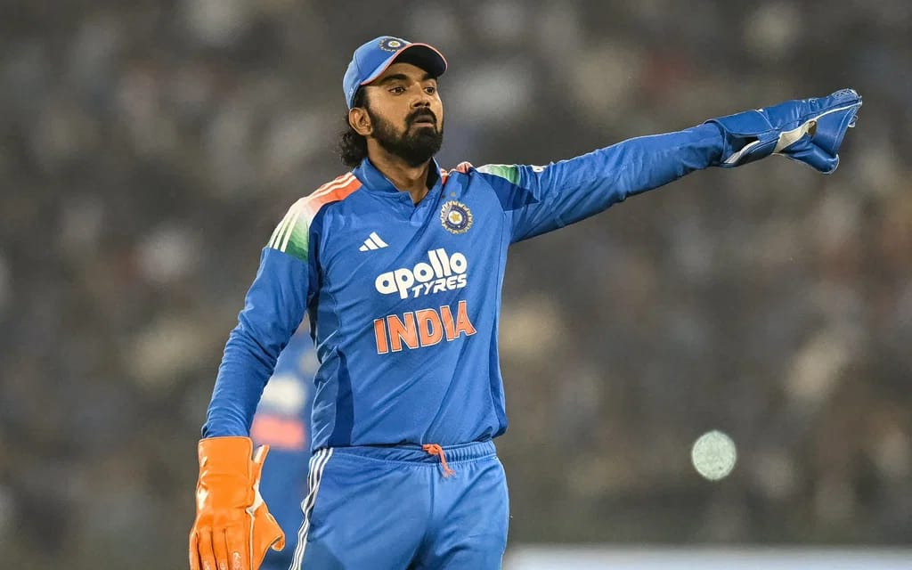
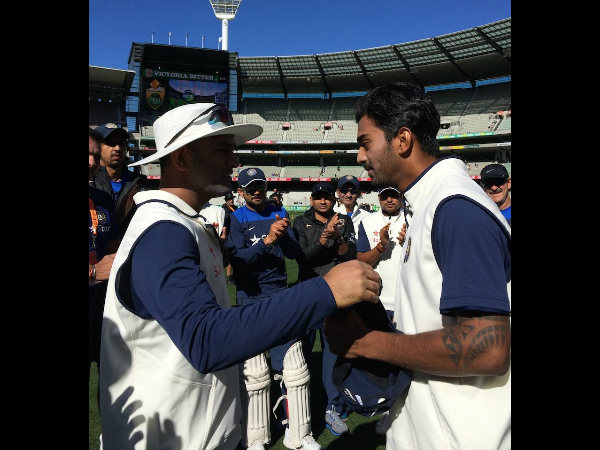
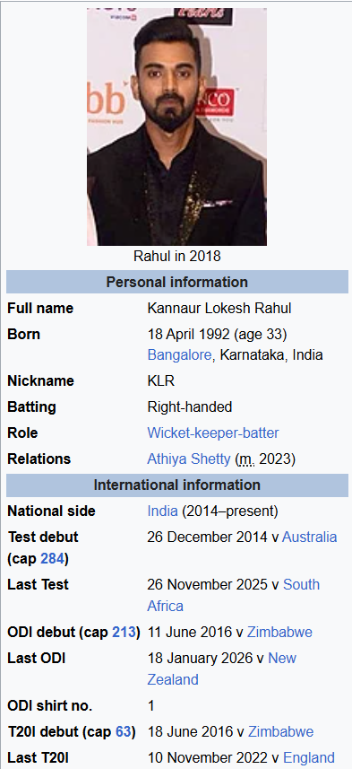
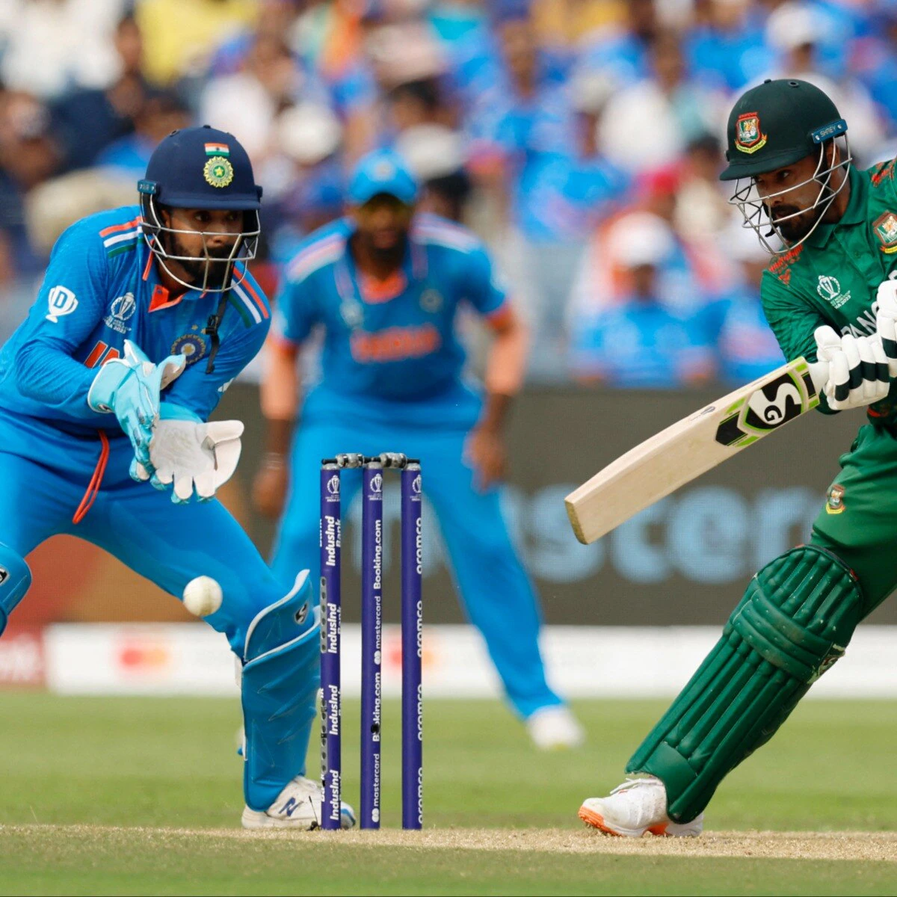

In this Indian name, the name Kannaur Lokesh is a patronymic, and the person should be referred to by the given name, Rahul.
KL Rahul
Kannaur Lokesh Rahul[1] (Kannada: [kaɳːuːɾ loːkeːʃ ɾaːhul]; born 18 April 1992) is an Indian international cricketer. He plays for the Indian national team as a right-handed wicket-keeper batter. Rahul represents Karnataka in domestic cricket and Delhi Capitals in the Indian Premier League.
Rahul was born on 18 April 1992 to K. N. Lokesh and Rajeshwari in [[Bangalore]], Karnataka in a [[Kannada]]-speaking family.His father Lokesh, who hails from Kannanur in [[Magadi]], is a professor and former director at the [[National Institute of Technology Karnataka]] (NITK)of Dr. K. N. Lokesh. His mother, Rajeshwari, is a professor at [[Mangalore University]]
Rahul made his international debut in 2014 against Australia in the Boxing Day Test in Melbourne. Two years after his Test debut, Rahul made his One-Day International debut in 2016 against Zimbabwe, where he scored his first century by hitting a six on the last ball to reach 100* (115) from 94 (114), which was also the only six of the entire match. Rahul is the first and only Indian cricketer to score an ODI century on his debut. On the same tour, he made his T20I debut.[2]

Domestic Career
Rahul made his first-class cricket debut for Karnataka in the 2010–11 season. In the same season, he represented his country at the 2010 ICC Under-19 Cricket World Cup, scoring 143 runs in the competition.[14] He made his debut in the Indian Premier League in 2013, for Royal Challengers Bangalore.[15] During the 2013–14 domestic season he scored 1,033 first-class runs, the second highest scorer that season.
Playing for South Zone in the final of the 2014–15 Duleep Trophy against Central Zone, Rahul scored 185 off 233 balls in the first innings and 130 off 152 in the second. He was named the player of the match and selected to the Indian Test squad for the Australian tour.
Returning home after the Test series, Rahul became Karnataka's first triple-centurion, scoring 337 against Uttar Pradesh.[16] He went on to score 188 in the 2014–15 Ranji Trophy final against Tamil Nadu and finished the season with an average of 93.11 in the nine matches he played.
In January 2026, Rahul returned to represent Karnataka in the Vijay Hazare Trophy after a six-year gap, having last appeared in the tournament in 2019
KL Rahul – International Debut & Career Overview
KL Rahul, one of India’s most stylish and versatile batsmen, made his international debut in all three formats between 2014 and 2016. Known for his elegant stroke play and consistency, Rahul has been a key player for the Indian cricket team.
Early International Journey
KL Rahul made his entry into international cricket in 2014 and gradually established himself as a key player for the Indian cricket team. Despite a modest start in some formats, his determination and hard work helped him become one of India’s most dependable top-order batsmen.
Test Debut
KL Rahul made his Test debut against Australia in Melbourne in 26 December 2014. In his first innings, he scored just 3 runs, but he quickly improved and went on to become a reliable Test opener for India.

Key Details of KL Rahul's Test Debut:
* Opponent: Australia
* Date: December 26–30, 2014 (Boxing Day Test)
* Venue: Melbourne Cricket Ground (MCG)
* Debut Cap: Presented by MS Dhoni
* Scores: 3 and 1
ODI Debut A Dream Start
KL Rahul's One Day International (ODI) debut came in 2016 against Zimbabwe in Harare. He had a शानदार start to his ODI career by scoring an unbeaten 100 runs in his very first match.
This incredible performance made him one of the few Indian cricketers to score a century on ODI debut. His innings was marked by composure, timing, and maturity, instantly establishing him as a strong contender in the limited-overs format.
T20 International Debut
KL Rahul also made his T20 International debut in 2016 against Zimbabwe. Unfortunately, he was dismissed for a duck (0 runs) in his first match. However, this setback did not affect his confidence.
Rahul bounced back strongly in the following matches and went on to become one of India’s most consistent T20 batsmen. He has scored multiple centuries in T20 Internationals and is known for his aggressive yet controlled batting approach.

Vice-Captaincy (2021-2022)
In September 2021, Rahul was named to India's squad for the 2021 ICC Men's T20 World Cup.[39] He was the highest run scorer for India in the tournament, scoring 194 runs including three consecutive fifties. He also scored the tournament's joint fastest fifty in just 18 balls against Scotland.[40][41] After Virat Kohli stepped down as T20I captain, Rahul was appointed the vice-captain of the team in T20Is as former vice-captain Rohit Sharma was appointed the new captain of T20I format. Later, Rahul was appointed ODI vice-captain as well due to the change of captaincy.
In December 2021, Rahul was named as India's Test vice-captain for the away series against South Africa after India's regular vice-captain Rohit Sharma was ruled out of the series. Rahul was also named as the ODI captain for the One Day series of the same tour as India's regular ODI captain Rohit Sharma was ruled out of the series due to a hamstring injury. In the first test match against South Africa in December 2021, he scored 123 in India's first innings and 23 in India's second innings. For this performance, he was awarded the Man of the Match award.
In the second test against South Africa in January 2022, Rahul captained India for the first time in Test cricket and became the 34th Test captain of India. He scored a half-century on his captaincy debut. Despite his best efforts, Rahul couldn't lead the team to victory, and India lost the second Test by seven wickets. In the first ODI against South Africa, he made his debut in ODI captaincy and became the 26th ODI captain of India. However, India lost the series 3–0 to South Africa.
KL Rahul being interviewed during the 2022 T20 World Cup
In February 2022, during the second ODI of India against the West Indies, Rahul scored 49 (48) and completed 6000 runs in international cricket across all formats. In the same ODI, Rahul sustained an upper left hamstring strain and was ruled out of the next ODI as well as the upcoming T20Is series against the West Indies.[42] Rahul was named captain for the South African tour of India in June, but was later ruled out of the series due to a groin injury.[43] After a successful sports hernia surgery, Rahul came back to the team and was named captain for the India Tour of Zimbabwe in August.
Rahul was the stand-in captain for the team during the last match played by team India in the 2022 Asia Cup against Afghanistan.
Due to poor form, in February 2023 he was removed from the Test vice-captaincy, with his spot in the team questioned.
Wicket-Keeping Stats
KL Rahul is one of India’s most dependable cricketers and has proven himself as a skilled wicketkeeper-batsman across formats. Known for his elegant batting style and calm temperament, KL Rahul has successfully taken on the responsibility behind the stumps, especially in limited-overs cricket. As a wicketkeeper, he combines sharp reflexes with safe hands, making crucial catches and quick stumpings look effortless. His ability to balance both batting and wicketkeeping roles adds great value to the team, providing flexibility in team selection. Rahul’s consistent performances and leadership qualities have made him a key player for India in international cricket.
KL Rahul has contributed effectively as a wicketkeeper for India, especially in limited-overs cricket. As a keeper, he has taken over 60 catches and completed more than 10 stumpings in international matches. His sharp reflexes, safe hands, and quick movement behind the stumps have helped him take important dismissals at crucial moments. Rahul’s ability to perform both as a reliable batsman and an efficient wicketkeeper makes him a valuable asset to the Indian cricket team.

Home
This is my first website created using HTML and CSS.
About
You write the information of India International Cricket Player Kannaur Lokesh Rahul